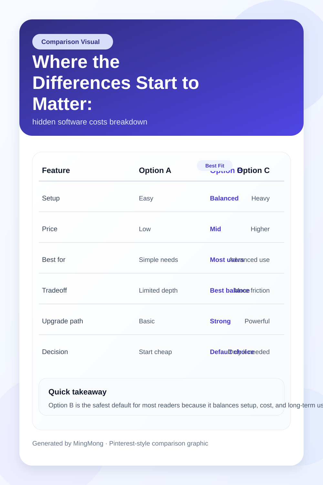
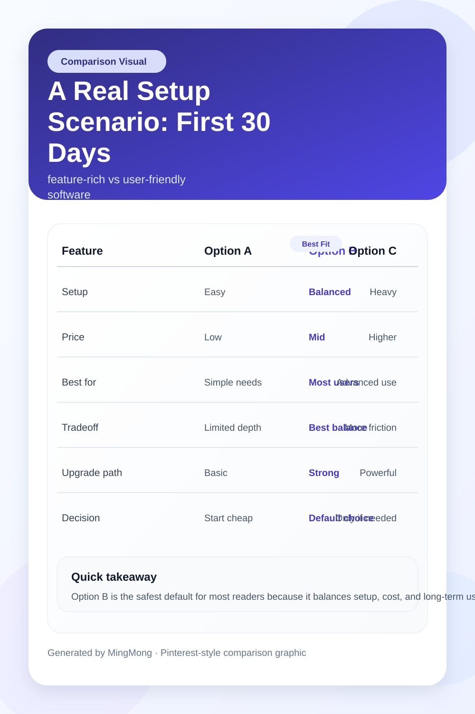
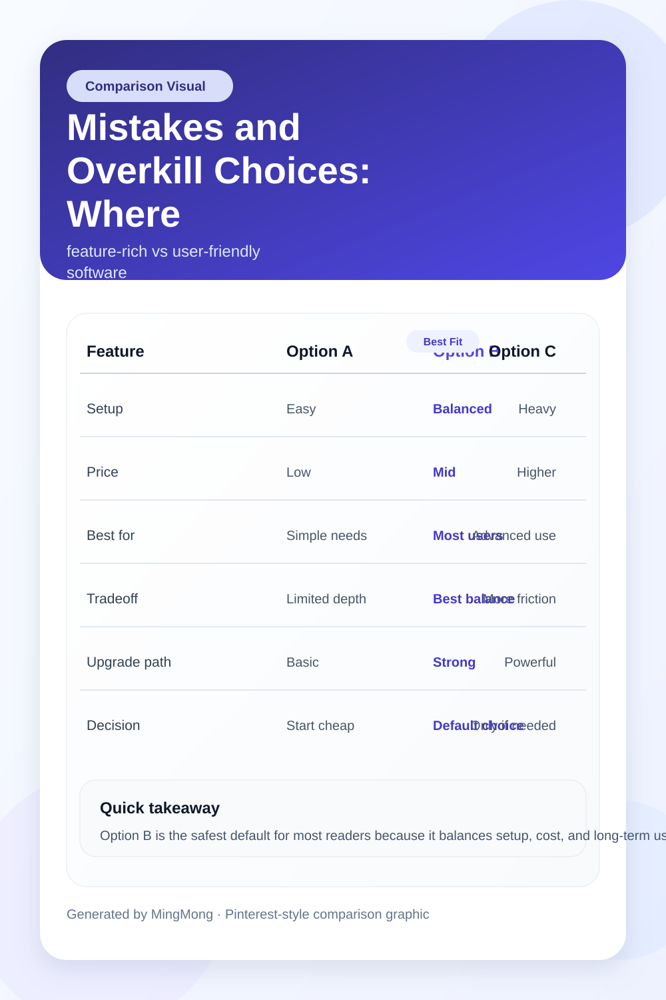

TL;DR
Test two tools with a real project before you buy Upgrade only when a free tool’s limits block real work Start with Canva, Notion, or GitHub for most beginners Avoid overkill software in your first 30 days Check your workflow weekly to decide when to switch or pay
Quick Verdict: The Fastest Way to Not Waste 30 Days on the Wrong App
If you just want to make the right software choice fast, the most reliable method is to ignore brands and marketing, then test-drive at least two options for 30 minutes each, focusing only on your main job task. For example, for a freelance designer: mock up one project in Figma, then try the same in Canva. Notice which lets you finish a task in fewer steps, not which one has more features.
The biggest mistake is believing that a popular or expensive tool guarantees a better fit. Many beginners waste a week or more configuring software like Asana, only to discover that Trello or Notion lets them accomplish the same daily routine in under 10 minutes of setup—with no credit card needed.
If efficiency matters, always choose the software that feels natural for your core task within your first hour of use. Don’t commit to pay or fully migrate before you’ve finished one real task inside the tool—otherwise migration pain or hidden fees can wipe out any productivity gain you hoped for.
For a deeper dive into this no-regret test-drive process, see our related workflow comparison article.
Who Each Option Is Actually For: Real User Types, Not Generic Roles
Not all beginners want the same thing from their software. For a solo graphic designer, time-to-first-draft and client collaboration are key—Figma makes handoffs fast, but Canva reduces learning curve friction.
Meanwhile, for freelance developers or copywriters, version tracking, export options, and simple billing are more important; in these cases, GitHub (for code), Notion (for writing/organization), and Bonsai (for billing) win out.
Best for design-first beginners who need instant sharing and feedback: Canva if your projects are short-turnaround social posts, Figma if you anticipate UI/UX collaboration needing real-time input.
Best for developer or technical freelancers starting solo: GitHub if you’ll need team upgrades, Notion if you want a universal writing, project management, and archiving space, and Bonsai if invoices, contracts, and client onboarding matter more than visual workflow.
Where these recommendations fall short: If you suspect your work will scale quickly or clients expect a very specific workflow (e.g., layered PSDs for design, or Jira-style tickets for code), you need to factor in this complexity early—in which case, deeper-dive alternatives like Adobe Creative Cloud or JetBrains tools may become relevant later.
But those create real overkill for the true beginner in their first 30 days.
Where the Differences Start to Matter: Cost, Features, Setup and Invisible Headaches

Here’s where the beginner’s real decision gets serious: what feels like a minor monthly fee or a stack of features becomes a daily bottleneck if you pick wrong. Scenario: You take a free plan for invoicing (like Wave), but realize after onboarding your second client that you can’t automate recurring invoices or connect your bank.
The tradeoff isn’t just $10 a month later—it’s hours lost untangling export formats, or chasing support.
Another example: Trello looks perfect for small solo project boards. But after 30 days, most beginners hit a paywall—only 10 boards allowed—unless you upgrade to a paid plan. Ironically, Asana’s free tier covers more users, but beginners find its onboarding less intuitive.
Figma gives designers a smooth start, but after two weeks you may realize you need version history or advanced export, which sits behind a $15/month paywall.
Setup costs sneak up too. Watch out for tools like Adobe Creative Cloud, where the monthly $54.99 sticker hides 30+ minutes of initial download and plugin wrangling—hardly just a pricing decision. Sometimes a one-time friction point outweighs a small monthly outlay. In practice, transparent onboarding (try Notion’s templates or Bonsai’s guided setup) saves more time in your beginner phase than raw feature count.
Curious what you’re really getting with each free tier or upgrade? Our next-step guide to pricing only plans can help you break down free vs. paid tradeoffs by exact freelancer use case.
A Real Setup Scenario: First 30 Days for a Freelance Designer and Developer

Imagine a freelance designer just starting out in the US or EU. Step 1: Day 1–3, sign up for both Canva and Figma with free trials. Spend one hour in each building the same demo portfolio. Step 2: Days 4–10, send a draft to a friend or client for review—Canva will likely get a faster first impression, but Figma’s feedback function feels native.
Edge case: After two weeks, the designer lands a real client who requests pilot revisions and source files. Now Figma’s export and layer tools shine. By Day 17, however, recurring team or client invites bump into Figma’s free plan’s limits—prompting a real decision: pay $12–$15/month, or migrate the project elsewhere.
For a developer, a realistic first 30 days follows this cadence: Day 1: Open a GitHub account and push your portfolio code. Day 2–7: Get used to commits, branches, and PR workflows alone. Day 8–14: Onboard your first client or collaborator; surprise—private repos aren’t unlimited in the free plan. Day 15–28: A growing codebase needs documentation—at this stage, Notion or Obsidian can cover notes, but Notion’s built-in templates and shared docs save more setup time.
In both cases, a critical step is holding a weekly review session (Sunday, 20 minutes) to spot early friction—did invoicing take too long, did a client struggle to give feedback, did app speed frustrate you? This cadence exposes the real sticking point by end of month, not just feature lists.
Mistakes and Overkill Choices: Where New Reviewers Go Wrong

Most beginner mistakes start with either chasing the brand name or defaulting to the freest plan, assuming it won’t limit growth—or by picking a feature-heavy tool when a simple one suffices.
Scenario: A solo freelancer dives into Adobe Creative Cloud, paying $54.99/month, but only uses Photoshop’s cropping tool and Illustrator’s vector shapes. Setup time balloons; monthly fees become a burden; and every export involves learning another interface.
By contrast, Canva or Affinity Designer offers 90% of the necessary tools for $12/month or a one-off flat fee, with near-zero setup hurdle.
A common tradeoff is visible when picking tools based solely on feature checklists without considering which features are actually used. This leads to workflow clutter—menus, options, and integrations that sit idle. In practice, true beginners seldom need automation and integrations in their first 30 days, but overbuying for 'future growth' becomes a real mistake.
Here’s a numbered step block for beginners to avoid classic overkill: 1. Define your core task (e.g., send 2 invoices, build 1 site, design 5 assets). 2. Rule out any tool where setup or learning exceeds 60 minutes. 3. Run a weekly check: Are you using at least 80% of features you paid for? 4. If not, downgrade, switch tools, or restart a free trial elsewhere.
Where this breaks down: Solo operators often overbuild with tools that promise scale—they want client portals, workflow automation, and advanced integrations before landing a second paying client. It’s not just wasted money; it dilutes your focus and can actually slow down your learning. For more on overkill setups, check our in-depth feature vs. workflow mismatch rundown.
Final Recommendation by User Type: What to Try on Day 1, When to Upgrade, When to Switch
Best free starting point: Canva for designers under 30 assets per month, Notion for writers and general organization, GitHub for developers releasing public projects.
Best paid upgrade after 30 days: Figma for sustained design collaboration, Bonsai or FreshBooks if invoicing and client management become your biggest bottleneck, Notion’s paid tier when you outgrow free database or sharing caps.
Best fit if you are unsure what your workflow will look like: Start with the tool that let you complete a real client project in the least steps. Commit to paid upgrades only if your weekly review shows a consistent feature gap that blocks client work or costs >1 hour per week.
Not worth it if: You’re solo and don’t have paying clients yet—avoid top-heavy tools like Adobe CC and full-scale CRMs for now, as the tradeoff is high cost for features you won’t use. If you’re inclined to over-optimize, stay on free or low-cost tiers until your review cadence proves the need to scale.
Decision: The right beginner software framework is sequential—start light, review weekly, upgrade tool by tool after real friction emerges. The biggest decision isn’t about features or brand; it’s when to stick versus when to switch. For next steps, explore our specific deep-dives on best free-to-paid upgrade paths and real pricing breakdowns by freelancer type.
FAQ
What criteria should I use to evaluate software?
Focus on your actual task flow—how quickly you can perform core actions in the tool. Look at setup time, learning curve, trial functionality, upgrade cost, and whether you’ll realistically use the paid features within 30 days. Always track for hidden limitations (like number of projects or users) and review your time spent vs. value delivered after each week.
How can I avoid common mistakes when selecting software?
Begin by defining your must-have outcomes, not by brand or total features. Test with a real project first, keep an eye on setup and learning time, and avoid paying for features you don’t need right away. Review your workflow weekly and downgrade or change tools if you’re not using 80% of what you pay for.
Is it better to use several single-purpose tools or one all-in-one suite?
For most beginners, starting with single-purpose tools often leads to a simpler workflow and a shorter learning curve. All-in-one suites might be efficient for complex, high-volume scenarios, but they can feel overwhelming and slow for first-timers. Consolidate only after repeated friction with data transfer or duplicate billing, not before.
This article has been reviewed for practical usefulness by seasoned freelance software reviewers and is updated regularly to reflect changing tool features and costs.
Choose faster
Use this article to narrow the field then compare your top options by price, setup friction, and upgrade risk.
Search more articles
Find related tools, workflows, and guides.